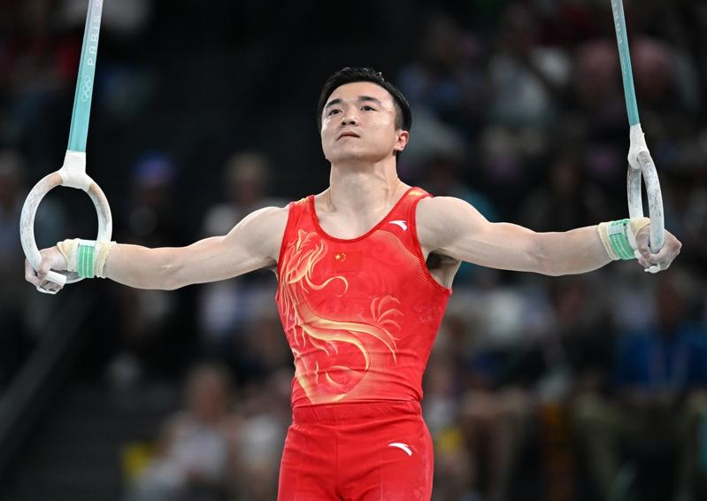
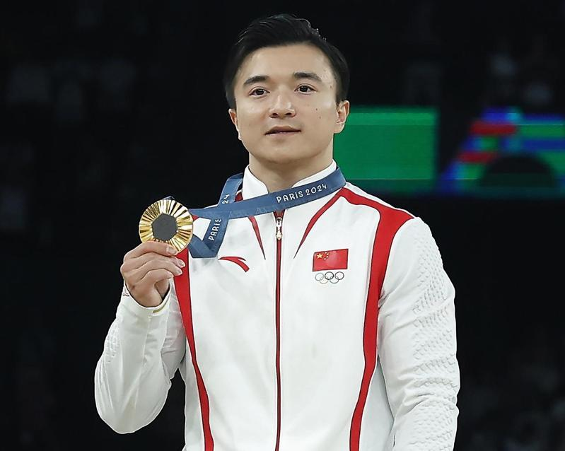

下个月将迎来30岁生日的中国选手刘洋，在巴黎奥运上给「而立之年」准备了一份最好的礼物。4日他卫冕男子吊环冠军。从1984年洛杉矶奥运李宁首夺吊环金牌，到2008年北京奥运陈一冰问鼎，刘洋是首位连续两届奥运荣膺「吊环王」的中国运动员。
当天决赛，第二个出场的刘洋选择了难度系数6.400的动作。比赛前他在吊环上简单做了调整，随后每个动作都完成得干净利落，每一次悬停，他都如同一根针静止在半空中，等待裁判的确认和观众的掌声，整套动作一气呵成，最终得到15.300分的全场最高分。
颁奖仪式上，刘洋亲吻着金牌，将金牌两次贴在队服胸前的五星红旗上。
「我觉得今天表现还是有一些小瑕疵的，对于我这种完美主义者来说还不够。」刘洋赛后谦逊地说，「马上就到而立之年了，这枚金牌对于自己的人生来说，写下了比较好的篇章。」
第三次踏上奥运赛场的刘洋志在卫冕。赛场上，自信与沉稳写在这位老将脸上。回顾本届奥运征程，刘洋既兴奋又遗憾。「兴奋的是自己成功卫冕，把这块金牌留在了中国队，但吊环冠军只是小目标，遗憾的是最想得的团体冠军还是没得到。」
此前的男团决赛中，刘洋在吊环项目上得到15.500的全场最高分，但由于最后一项出现的失误，中国队遗憾错失金牌。赛后刘洋泪洒赛场，哭红的眼睛令人心痛，从东京奥运坚持到巴黎奥运，男团金牌是他最高的梦想。
作为中国体操队年纪最大的队员，团体赛后他主动揽起责任，「虽然自己表现得还可以，但没有在其他项目上帮助到团队，感觉很遗憾，年轻运动员第一次参加奥运，出现失误还是经验问题，自己作为老队员应该更多地鼓励和提醒」。
里约奥运时，中国体操队遭遇了「滑铁卢」，刘洋排名吊环第四名。东京奥运，刘洋的膝盖出现了伤病，带伤冲金成功后，他经历了膝盖手术，一度长时间远离赛场。直到去年，刘洋才重新找回巅峰状态，在世锦赛中夺得吊环冠军。
「这个奥运周期备战遇到了很多困难，伤病问题、恢复问题的挑战都是前所未有的，但最大收获就是让自己变得更自信了。」刘洋说。
这三年，刘洋和家人聚少离多。每次回家，父母都会包他最爱吃的三鲜馅饺子。夺冠后的刘洋期待地说：「先想着三鲜馅饺子，然后再想想其他快乐的事！」
巴黎奥运热话题除了金银还有钻石 奥运场上的求婚名场面真不少「胯下一包」卡到杆子 法选手撑竿跳失败却暴红再战2028？拜尔丝：永不说不 但到时我真的老了金牌内战成饭圈大战？孙颖莎满场欢呼 陈梦收获嘘声4日赛程 网球男单王者诞生、樊振东力拚桌球男单金牌

8月4日，中国选手刘洋在比赛中。(新华社)
下个月将迎来30岁生日的中国选手刘洋，在巴黎奥运上给「而立之年」准备了一份最好的礼物。4日他卫冕男子吊环冠军。从1984年洛杉矶奥运李宁首夺吊环金牌，到2008年北京奥运陈一冰问鼎，刘洋是首位连续两届奥运荣膺「吊环王」的中国运动员。
当天决赛，第二个出场的刘洋选择了难度系数6.400的动作。比赛前他在吊环上简单做了调整，随后每个动作都完成得干净利落，每一次悬停，他都如同一根针静止在半空中，等待裁判的确认和观众的掌声，整套动作一气呵成，最终得到15.300分的全场最高分。
颁奖仪式上，刘洋亲吻着金牌，将金牌两次贴在队服胸前的五星红旗上。

8月4日，冠军中国选手刘洋在颁奖仪式上。(新华社)
「我觉得今天表现还是有一些小瑕疵的，对于我这种完美主义者来说还不够。」刘洋赛后谦逊地说，「马上就到而立之年了，这枚金牌对于自己的人生来说，写下了比较好的篇章。」
第三次踏上奥运赛场的刘洋志在卫冕。赛场上，自信与沉稳写在这位老将脸上。回顾本届奥运征程，刘洋既兴奋又遗憾。「兴奋的是自己成功卫冕，把这块金牌留在了中国队，但吊环冠军只是小目标，遗憾的是最想得的团体冠军还是没得到。」
此前的男团决赛中，刘洋在吊环项目上得到15.500的全场最高分，但由于最后一项出现的失误，中国队遗憾错失金牌。赛后刘洋泪洒赛场，哭红的眼睛令人心痛，从东京奥运坚持到巴黎奥运，男团金牌是他最高的梦想。
作为中国体操队年纪最大的队员，团体赛后他主动揽起责任，「虽然自己表现得还可以，但没有在其他项目上帮助到团队，感觉很遗憾，年轻运动员第一次参加奥运，出现失误还是经验问题，自己作为老队员应该更多地鼓励和提醒」。
里约奥运时，中国体操队遭遇了「滑铁卢」，刘洋排名吊环第四名。东京奥运，刘洋的膝盖出现了伤病，带伤冲金成功后，他经历了膝盖手术，一度长时间远离赛场。直到去年，刘洋才重新找回巅峰状态，在世锦赛中夺得吊环冠军。
「这个奥运周期备战遇到了很多困难，伤病问题、恢复问题的挑战都是前所未有的，但最大收获就是让自己变得更自信了。」刘洋说。
这三年，刘洋和家人聚少离多。每次回家，父母都会包他最爱吃的三鲜馅饺子。夺冠后的刘洋期待地说：「先想着三鲜馅饺子，然后再想想其他快乐的事！」
巴黎奥运热话题
- 除了金银还有钻石 奥运场上的求婚名场面真不少
- 「胯下一包」卡到杆子 法选手撑竿跳失败却暴红
- 再战2028？拜尔丝：永不说不 但到时我真的老了
- 金牌内战成饭圈大战？孙颖莎满场欢呼 陈梦收获嘘声
- 4日赛程 网球男单王者诞生、樊振东力拚桌球男单金牌